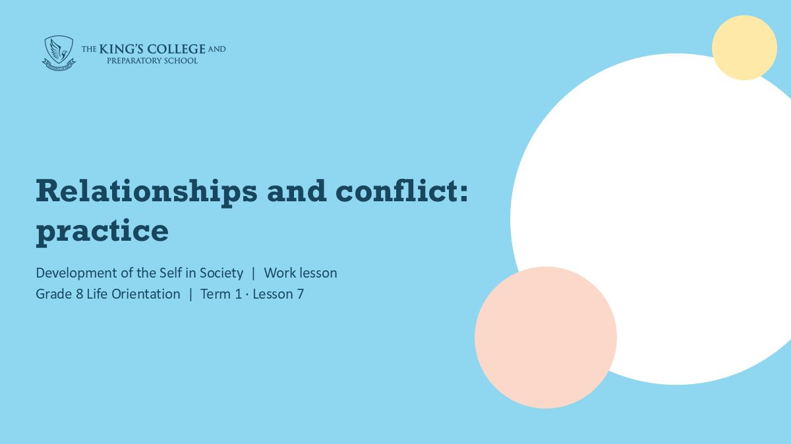

Term 1 · Lesson 7 · Work lesson: written practice
Relationships and conflict: practice
Start here
Today I will
- Revise relationships and conflict from my Handbook
- Answer IEB-style questions about a real-life scenario
- Mark my own work and plan how to improve
Quick quiz: give one sign of a healthy friendship and the five IDEAL steps.
Words to Know
| Word | Meaning |
|---|---|
| Boundary | A line you set about what is OK and not OK for you. |
| Assertive | Standing up for yourself calmly and respectfully. |
| 'I' statement | Saying how you feel ('I felt hurt when…') instead of blaming. |
| IDEAL | Identify, Describe, Evaluate, Act, Look back. |
Slides

Notes
This lesson revises: Term 1 · Lesson 5: Healthy relationships, Term 1 · Lesson 6: Disagreeing well and saying no. Read those notes first, then do the written practice.
Attack the problem, not the person, and in exams, use the source.
Written practice
Before the Grade 8 camp, Aarav sent Thabo a private voice note saying he was nervous about sleeping away from home. As a joke, Thabo forwarded it to the class group chat and many learners laughed. Aarav is very angry and wants to post something embarrassing about Thabo in return. Mia tells Aarav to wait until he is calm.
- 3.1Define the term 'boundary'.(1 x 1) (1)
- 3.2State TWO signs of a healthy friendship.(2 x 1) (2)
- 3.3Identify the problem in the source.(1 x 1) (1)
- 3.4Explain ONE way in which Thabo's action shows an unhealthy friendship.(1 x 2) (2)
- 3.5Differentiate between an assertive and an aggressive response by Aarav.(1 x 2) (2)
- 3.6Use the IDEAL steps: describe TWO options Aarav has and evaluate ONE of them.(2 + 2) (4)
- 3.7Write an 'I' statement Aarav could use when he speaks to Thabo.(1 x 2) (2)
- 3.8Assess why Mia's advice to wait until he is calm is helpful.(1 x 3) (3)
- 3.9Recommend ONE thing Thabo should do now to repair the friendship. Explain how it would help.(1 x 3) (3)
Finished early?
Try exam-style questions on relationships and conflict from the Term 1 exam practice bank.
- Turn to the Term 1 exam practice bank at the back of your Activity Book and find Set B: Me and others.
- Answer as many questions as you can in 10 minutes. Read the brackets first.
- Mark your answers in green with the Term 1 exam practice memo on Google Classroom.
- Write down the question that lost you the most marks and what was missing.